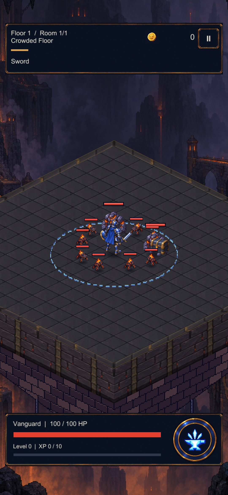
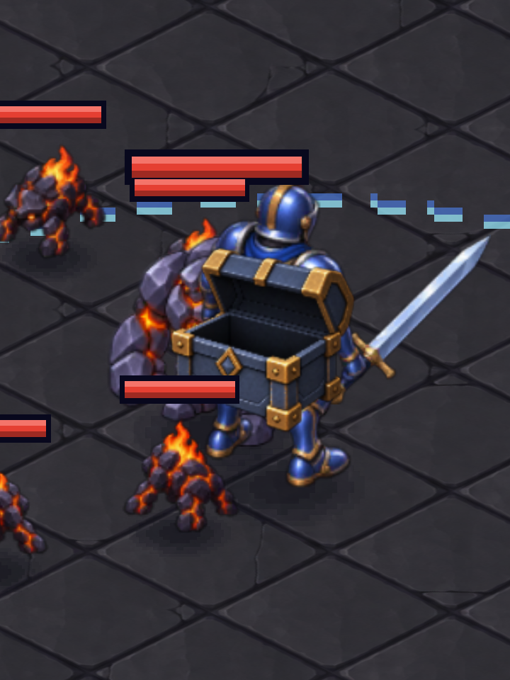
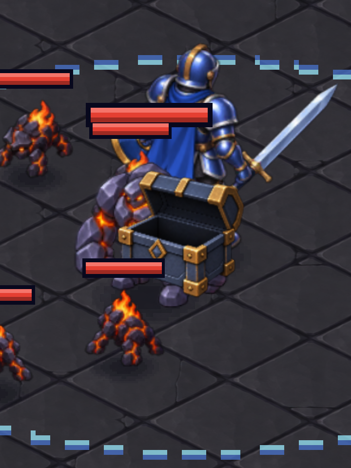

CRYPTFORGE / UNITY ART PROOF
Sandık artık aynı dünyaya ait.
Gerçek Unity sahnesinde geçici görsel değişimi. Savaş, kamera ve ödül kuralları değiştirilmedi. Bunlar telefon görüntüsü değildir.
Önce · mevcut piksel sandık

Sonra · boyalı sandık adayı

Yakından · malzeme ve siluet
Başlangıç önerisi: 0,75 birim. Küçük seçeneğin alan kazancı sınırlı; kor kilidinin görünürlüğü azalıyor.
Entegrasyondan önce çözülmesi gereken: derinlik
Kahraman öne geçtiğinde sandık hâlâ gövdesinin üstüne çiziliyor. Ortak zemin referansıyla çizim sırası ele alınmalı; boyutu küçültmek yeterli değil.
Kahraman önde · sorun görünür

Kahraman arkada

272 saf test · 0 derleme hatası/uyarısı · 1 grafik testi · 415 GUID / 555 sahne nesnesi/bileşeni. Yeni APK ve telefon testi yok.
Yöntem, sınırlar ve tekrar çalıştırma · Kaynak görseller